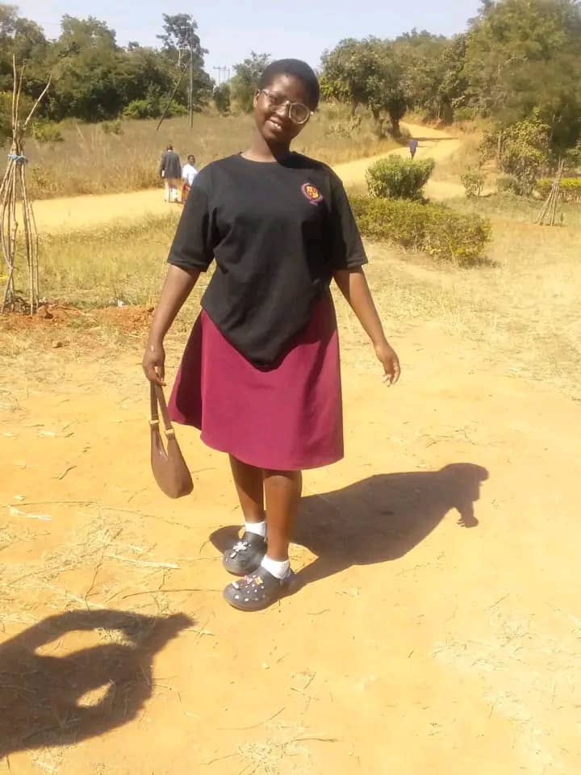
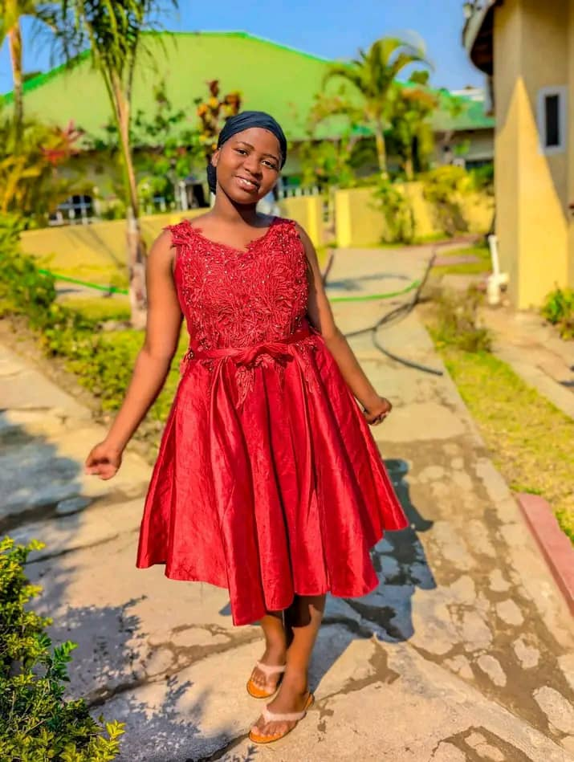
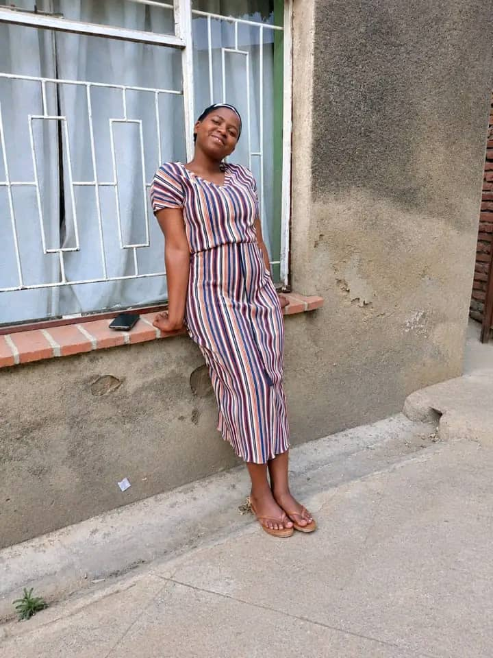

mostly...
Eleven days after my father’s burial, I returned to Blantyre, where I stay for my studies at Malawi University of Business and Applied Sciences. Although most of my classes are online, I remain in Blantyre for discussions and other academic activities. However, during the three weeks after my return, I struggled to concentrate on my studies. Everything felt different, and I found it difficult to continue with the plans I had before my father’s death. During that time, I met someone named Trinity. I had never planned to get into a relationship at that point in my life, but I felt that having someone to talk to and share things with might help me through what I was going through. The pictures below are of Trinity, the person I met during that difficult period.



On 14 September, Trinity and I were intimate, and unfortunately, there was an exposure. Two days later, after realizing the seriousness of the situation, I called Trinity and asked her to come so that we could talk about it. She came and assured me that everything was fine. She told me that she would provide a legally verified health status from an authorized institution. She also told me that she was a blood donor at her school, Matandani Adventist Mission, under the name Trinity Mapemba. I had asked her to provide this information because I wanted to make a responsible decision about our health while we were still within the 72-hour window. She assured me that I was fine, and she came the following day to have a test conducted. Her presence alone gave me some relief. On 18 September, she went to the health facility for the test and later brought me the results. Then, on 20 September, there was another serious exposure, although it was not sexual intercourse. That was the moment I began thinking seriously about the kind of life we were living and whether it was really the life I wanted for myself. After a few days, I told her that I was going to have my own test done, and that I wanted her to know where I stood as well. I noticed that she seemed uncomfortable with the idea, so I told her that I would go alone first and that we could go together later. Her reaction stayed in my mind. As I write this, I still do not know what the outcome of my own test will be. She is the only person with whom I have had this kind of exposure, and I never intended for anyone to be put in a situation like this because of me. I am deeply sorry to my family and friends for having to go through this with me. I never imagined that things would reach this point. Perhaps this was simply how things were meant to unfold. And when you are reading this, it means... , am no longer with you. but am trully sorry
mom am sorry you have to go through this. i know i have made your life difficult, but try remember the good times.
but at least try to remember the good times. i love you always.
sisters and brothers am so sorry too,
i know i have failed you. but just know am with Dad now. i love you mother
my closet man brother chawe. i know its difficult even for me too. but i dont have the right words to discribe how i feel man.
before i go. i will send a archive full of my passwords and some projects to email i was working on.
and young men, i did make a mistake, but i didnt get the chance to learn from it. bacuse i could not fit in that world.
so learn from it.
KINGSLY ISAAC MWENENGANA.